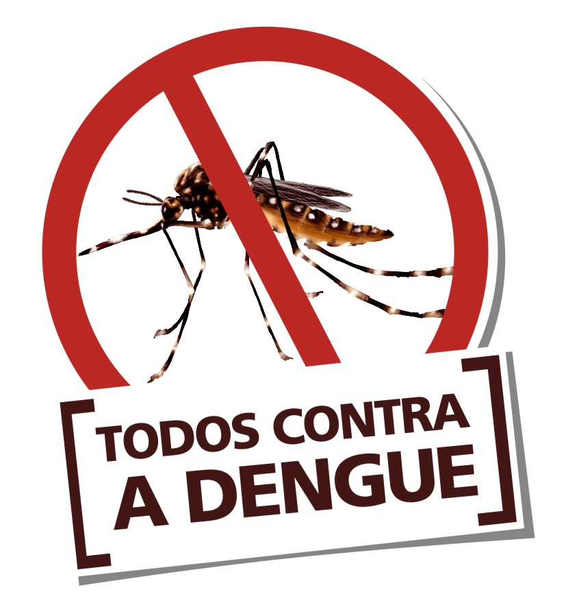

A DengueA dengue faz parte de um grupo de doenças denominadas arboviroses, que se caracterizam por serem causadas por vírus transmitidos por vetores artrópodes
Causas da dengue: " é uma doença infecciosa causada por um vírus chamado flavivirus, e transmitida ao homem principalmente pelo mosquito Aedes aegypti.".
É uma doença febril que afeta bebês, crianças e adultos. A infecção pode ser assintomática ou pode apresentar sintomas que variam de febre baixa a febre alta incapacitante, com forte dor de cabeça, dor atrás dos olhos, dores musculares e nas articulações e erupções cutâneas..
Febre alta > 38.5ºC.
Dores musculares intensas.
Dor ao movimentar os olhos.
Mal estar.
Falta de apetite.
Dor de cabeça.
Manchas vermelhas no corpo.
O Brasil registrou 220.658 novos casos prováveis de dengue no último final de semana. Ao todo, são 2.265.935 infecções, segundo dados desta 2ª feira (25.mar.2024) do Ministério da Saúde. 758 pessoas já morreram por causa da doença em 2024.
Aqui estão algumas das principais razõesque a dengue é perigosa: